One Defiant Extension
Current Version: 0.0.29
- NO LONGER BEING ACTIVELY UPDATED
- NOT COMPATIBLE WITH CURRENT VERSION OF LORD OF ULTIMA
One Defiant Extension, or The Defiant (TDK) Extension, is a browser extension built for The Defiant alliance on World 24 of Lord of Ultima. It was originally created for the Palace team to make it easier to collect enlightenment information but has since expanded to include other features.
Table of Contents
Installation
The TDK Extension is available as a Google Chrome or Mozilla Firefox extension. Clicking on the link for your respective browser should automatically start the installation process (if you're looking for the extension source code, it is exposed after installation).
Once installed, restart the game (or the browser in Firefox's case) for the extension to take effect. It will periodically check for and automatically download updates*. You may also return to this page in your browser at any time to get a new version. This page is also accessible from the About tab in the main extension interface.
* Firefox version does not support automatic updates so you will need to install new releases from the link above.
Features
Features of the TDK extension are integrated into the Lord of Ultima game interface. Some are consolidated in one tabbed window unique to the extension (the "main extension interface") while others are distributed throughout other panels and windows within the game.
Note: Some features are enabled immediately when the extension has been installed, others will need to be enabled manually.
To access main extension interface, you can use any of the buttons at the bottom of the screen inserted by the extension.
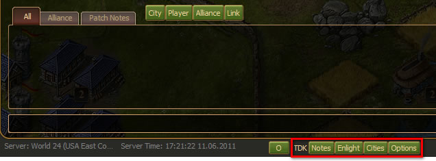
Note: Some screen shots shown may be from older versions of the extension so they may differ from what you see in the game.
These buttons can be hidden by clicking on the TDK title. They can also be more permanently customized or even removed completely through the TDK Options dialog. If removed, you're only access to the main extension interface is through a TDK tab added to Lord of Ultima's own Options dialog.
Notes
Notes allow you to keep easily accessible information in a floating dialog window. You can create new, and access saved notes from the Notes tab in the main extension dialog. When you create a new note, the note is presented in edit mode. Add text and BBCode (or even HTML) and click the Done button to see the final, rendered note. At anytime you can click the Edit button in the rendered view to edit your not further.
You can save a note by clicking on the Save checkbox at the bottom of the note dialog. This will make it listed in the notes tab. Notes can be unlisted by un-checking Save in the note itself or by deleting the note from the Notes tab.
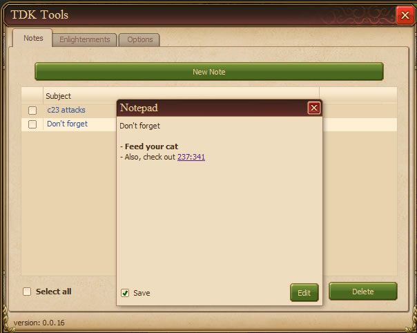
Integrated Open in Notepad buttons exist in forum threads, the chat window, the info panel for selected cities, and email messages allowing you to create new, pre-populated notes from those panels and dialogs. Selected city notes are unique in that they will show an asterisk (*) next to the notes button when a note has already been saved for that city. These notes are associated with the city using the city's coordinates in square brackets ([]) as the first text in the note.
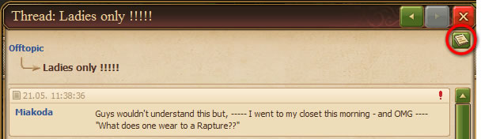
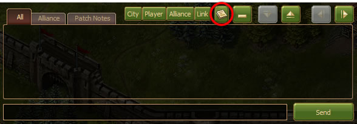
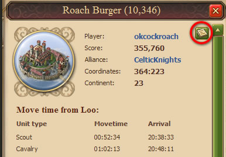
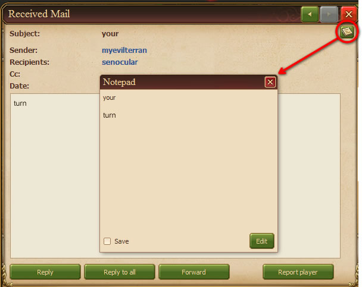
Saved Palace Trade Routes
You can now save palace trade routes (sending equal amounts of wood and stone as available in your source city) in a new Trades tab. New trade routes can be added from the Trades tab itself or from a new "+ Trade" button in the Quick Send buttons row for a selected city in Region view.
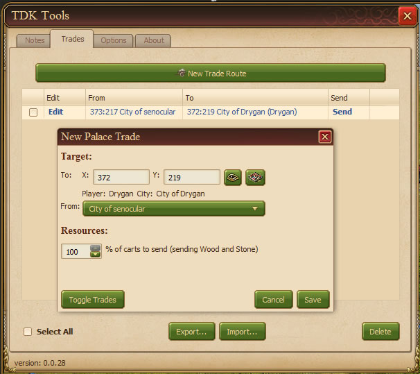
Clicking on Edit will allow you to edit a trade route. Clicking on the From or To city names will focus on those cities. And clicking on Send will send the trade. Trades sent are equivalent to clicking on the Quick "Send W&S" (a.k.a. "Send!!!") button a selected city from region view.
Note: Only palace trades using carts are currently supported.
Quick Attack! and Send! Buttons
These buttons are injected into the selected city information pane seen in the Region Map view. They make it easy to send troops or resources to the selected city.
The Attack! group of buttons will dispatch an order for all available non-baron units in the current city to attack, plunder, siege, or support the selected city.
The Send! group of buttons send all available resources to a city by cart, either as a palace trade if the selected city is a palace, or a regular trade if not. The number of carts used by the Send! buttons can be regulated within the extension Options tab.
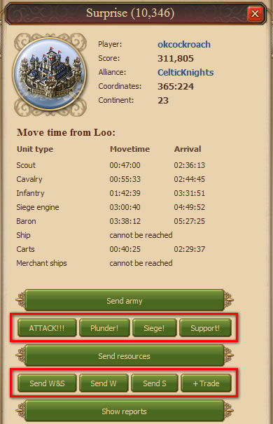
The placement of these buttons within the stack can also be controlled in the Options tab.
Building Counts
City Building Counts shows a box in the left information pane containing the combined level and number of buildings for the current city in the City Map view.
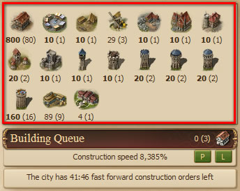
Building levels appear under building icons on the left with building counts on the right in parenthesis. When building levels are maxed, they appear in bold.
Note: This feature is updated based on certain reoccurring, though infrequent, events within the game so if performance is a concern for you, you may want to consider disabling it in the Options tab.
Single Click City Actions
Single Click actions simplify city building/destruction by allowing you to click a location within a city map once and have a certain action performed for that location. For example, using the Demolish action allows you to click buildings or resource nodes once to demolish them rather than selecting them first, and then choosing the demolish option.
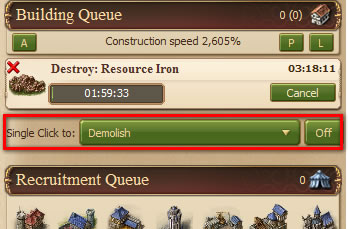
Extended Chat Commands
With Extended Chat Commands, One Defiant Extension greatly increases your options with the chat window with new commands. New commands allow you to perform common options such as navigating to a location on the map, opening up a specific dialog, or even sending email. Commands include the following:
- /tdkhelp or /tdk? = Display the list of available commands
- /cls = Clears the chat window
- /mail or /email [to [,subject [,message]]] = Displays the write email dialog or if all three comma (,) separated fields are present sends an email. If sending to multiple users, separate their name with a semicolon (;)
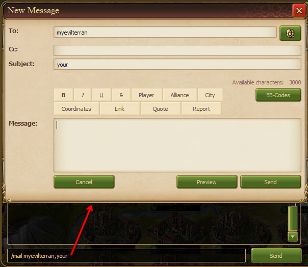
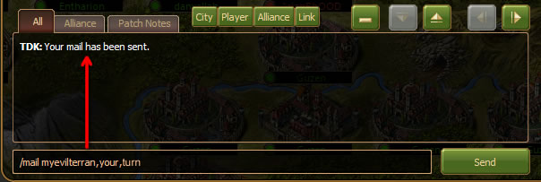
- /show what-to-show = Displays or hides (if already visible) a game window. Windows (by what-to-show id) include:
- reports
- quests
- research
- overviews
- rankings
- mail
- alliance
- social
- items
- shop
- profiles
- attacks
- virtues
- supporter
- mail [to [,subject [,message]]]
( Example: /show mail senocular,If I hadn't told you already...,I like the extension! )
- overview
- diplomacy
- members
- forums
- tdk
- dailyreward or dailyfreereward or DFR
- /goto [cXX or XXX:XXX] = Goes to a continent or coordinate
- /whois player-name = Displays the info dialog for a player
- /whoare alliance-name-or-abbreviation = Displays the info dialog for an alliance
- /whatis XXX:XXX = Displays city info dialog (reports) for the city at the coordinates
- /eval javascript-expression = Evaluates a javascript expression in the context of the game (or more specifically, the extension)
- /version = Displays the current TDK extension version in the chat window
- /note note-text = Saves a note to the Notes page with the specified text
- /activity user-in-your-alliance = Shows the last login date of the user specified (based on server, inaccuracy not fault of extension)
Chat Notifications
Set up notifications (off by default) to alert you when someone whispers to you, mentions you by name, or posts a message containing custom-defined text in the game chat. These can be useful to help prevent missing important messages when the chat panel is minimized.
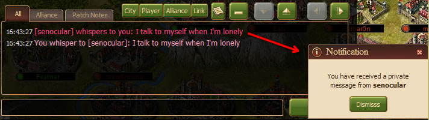
When specifying custom text, you can specify multiple matches by separating text with commas (,). Unfortunately this prevents commas from being used in string matches. As an example: battle,for the win,gold would create a notification if either "battle", "for the win", or "gold" was mentioned in chat.
To prevent spamming, only one notification can be present at a time. New chat notifications will replace older ones.
Daily Free Reward Notifications
Have a notification activate when the Daily Free Reward dialog appears to allow you to hide the dialog for later.
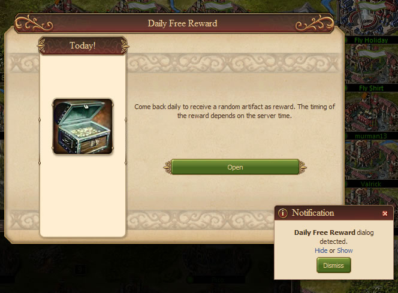
If you hide the Daily Free Reward dialog AND dismiss the notification window, you can still access the hidden Daily Free Reward dialog from the Other tab in the main extension interface. You can also use the chat command /show dailyfreereward to toggle the visibility of the Daily Free Reward dialog.
Cities List
A simple list of your cities in a compact window. More filtering features to control what cities are displayed will be available in future releases.
Release Notes
New in 0.0.29
- Again moved "Top" arrangement of extension quick-access buttons to the right of the extended set of header icons
- Fixed the Daily Free Reward notification which failed to recognize the daily free reward window after the latest patch
- Note: The version value reported in the in-game Tools dialog for the extension still reports 0.0.28 for version 0.0.29.
New in 0.0.28
- New trade dialog for saved palace trades
- Daily free reward notification should now more reliably be visibile on top of the daily free reward window
- Selected city Send buttons renamed slightly abbrevieating Wood as "W" and Stone as "S"
- A "+ Trade" button added to Send buttons group to create a new saved palace trade in the trades dialog (based on Send W&S button)
New in 0.0.27
- Moved "Top" arrangement of extension quick-access buttons to the right of the new food icon
- Moved "Single Click Actions" to above the build queue
- Single Click Actions are automatically turned on when selecting a new action
- Removed Enlightenments tab since the in-game Enlightened cities dialog supersedes it
- Removed Other tab; put contents in the Miscellaneous section of the Options tab
New in 0.0.26
- I took a break and forgot...
New in 0.0.25
- Fixed issue where apostrophes (') would be prefixed with a slash (\) in messages from chat notifications
- Allowed users to specify which actions are available in the Single Click City Actions menu
- Refresh in Cities window now in a dropdown
New in 0.0.24
- Fixed a Single Click bug not allowing new buildings to be added to the queue as assigned to the minister when there weren't enough resources available to pay for it
- Added /activity chat command for obtaining last login date for a fellow alliance member
- /goto chat command now will goto a continent if you forget the "c" prefix (e.g. /goto 22 is the same as /goto c22)
- Added Import/Export options for notes in the Notes window
New in 0.0.23
- Made About button available in TDK button group
- Added /version chat command for displaying TDK extension version
- Added /note chat command to quickly save a note text
- Added /show command option for showing and hiding the Daily Free Reward dialog (id = dfn or dailyreward or dailyfreereward)
- Added Daily Free Reward notification which will recognize a Daily Free Reward dialog and allow you to show and hide it
- Added Other page to include access to dialogs and features that might otherwise be lost (from GUI config or dialog dismissing, etc.)
New in 0.0.22
- TDK button now renamed to Tools and grouped with other UI buttons with a TDK label that, when clicked, toggles their visibility
- Added Notes, Enlight, and Options buttons to TDK button group
- Added ability to change location of the TDK button group within the interface
- Added a city list dialog accessible from the City button in the TDK button group
- Added additional operations in the Single Click City Actions feature including Upgrade and Build [building] operations
- Styling of link text used throughout the extension is now more consistent
- /eval command shows non-undefined results of script execution in chat window
- /eval command errors now show in the chat window
New in 0.0.21
- Minor changes in chat Notification wording to make a little more sense
- Added Open in Notepad buttons for region view selected cities in the sidebar
- Click to Demolish now in a dropdown format. More options for this to come soon
New in 0.0.20
- Added option for sound for notifications
- Added the /eval chat command
- Added the /reports command as an alias for /whatis
- Added an Open in Notepad button for enlightenments overview
- Added option to disable automatic turn off protection when changing cities for Click to Demolish button
New in 0.0.19
- Notification windows no longer steal focus
- Added a Click to Demolish button in City view
- Added ability to specify word matches for chat notifications
- Chat notifications now contain a link to open a Notepad window with the message causing the notification
- Open in Notepad for mail now contains some additional information about the mail message in the Notepad window
New in 0.0.18
- Added Open in Notepad button to chat
- Added support for overview, diplomacy, members, and forums tabs in the alliance view for the /show chat command
- Status message for SEND!!! buttons now differentiate between palace and normal trades when resources are sent
- Added support for notifications from chat events
New in 0.0.17
- Hot fix for broken dead code that prevented the main TDK dialog from appearing
New in 0.0.16
- Added "email" as an alias for "mail" in the /show chat command
- Added an About tab to reference this page
- Removed superfluous rule after title when converting a forum thread to a note
- Note popup windows created from mail messages and forum threads are now centered
- New features are enabled by default (reverted from 0.0.8)
- Ported to Firefox (Firefox version does not support automatic updates)
New in 0.0.15
- Ability to remember notes and have them display in the list in Notes tab
- Added /whois, /whoare and /whatis commands to chat extensions
New in 0.0.14
- Fixed bug where /cls in chat would prevent new messages from appearing if the maximum chat lines had been reached
- Some minor graphical improvements including SEND! and ATTACK! button layout and Options design
- Added Notes tab for opening new notes (Notes list/Select all/Delete are currently non-functional)
New in 0.0.13
- Hot fix for custom chat commands break
New in 0.0.10
- Added custom chat commands. Type /tdkhelp in chat for more info (must be enabled in Options)
- Added ability to open email or forum threads in new free-floating 'Notepad' dialogs (must be enabled in Options)
- Added Browser tab for in game web browsing (security restrictions prevents some sites from functioning when viewed through this tab)
- Added option for percent of carts to send for SEND!!! buttons
New in 0.0.9
- Enabled SEND!!! buttons functionality
- Improved layout and options in Options tab
- Added options to allow control over positioning of ATTACK!!! and SEND!!! buttons
- Optimized the Building Count refresh to only occur when a change relating to its content is detected
New in 0.0.8
- Added "SEND!!!" and similar buttons in the selected city detail view (Non-functional)
- ATTACK!!! commands no longer send 0 units in an order
- ATTACK!!! commands no longer include barons or city guards
- ATTACK!!! plunder command no longer includes siege engines
- New features are turned off by default
New in 0.0.7
- Added Building Count box in the main city view.
New in 0.0.6
- Re-labeled main button from "Shrines" to "TDK"
- Re-labeled main window from "Shrine and Enlightenment Information" to "TDK Tools"
- Added "ATTACK!!!" and similar buttons in the selected city detail view
- Added Options tab
New in 0.0.5
- Settings and results data saved between sessions
New in 0.0.4
- Fixes for everything that broke in 0.0.3
New in 0.0.3
- Your Alliance Only option (using separate server call not dependant on server list)
- Added Forum output tab
New in 0.0.2
- Main window consists of a tabbed interface with one Enlightenment tab
- Shrine list with generate and cancel buttons for checking the shrines listed
- Two output tabs: Overview with rich link results, and TSV for tab separated values
First Release
- A button is present at the bottom of the UI
- Clicking the button causes a window to opens with the content "Your" and a button that when clicked creates an alert that says "mama"
Known Issues
- Opening chat in Notepad windows does not preserve BBCode. This is a limitation of the chat panel. BBCode information is lost by the time the chat panel gets the chat text which prevents the Notepad window from being able to obtain it.
- Some text won't be recognized for chat notifications, particularly "Shared Report" in shared report links since this text was not in the original message (which is what notifications check) and is instead generated by the game client and inserted into the chat window after the fact.
- There may be conflicts when using the Attack! buttons when dealing with multiple, incompatible unit types such as a combination of land and water units. For example, I've seen this not work with a city containing ballista and sloops. The Support! command would not work because the ballista and sloops could not be sent out on the same order.
- Using the Single Click to feature may get you booted from the game for a short time. The game has safety measures in place to prevent botting. There are some safety precautions taken by the extension to help reduce the likelihood of this happening, but ultimately it is up to you to not abuse this functionality in a way that cause this to happen. (In other words, don't click too fast.)
To report issues with the extension, send an in-game email to senocular. Include the extension version (seen at the bottom of the main extension dialog) and the browser you're using along with a detailed description of the problem you're having.